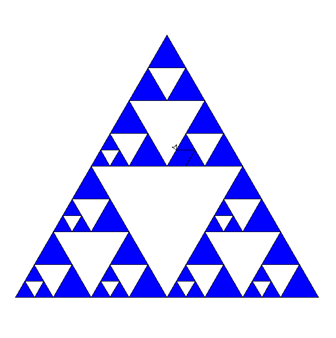

今回発表するのはシェルピンスキーのギャスケットを描画するプログラムだ。 立体を表現しようとしたが、どうしても時間が限界だったため pythonで平面を描画することしか出来なかった。
もともとの予定はC++だったが、結局はpythonでやることにした。
まず大きな青い三角形をかき、全てを青で塗りつぶしてその中を再帰プログラムで 白い三角形を小さくしながら書いていくことでフラクタルになるように設定した。 プログラム
from turtle import *
from collections import deque
len = 600
stX = -250
stY = -250
#スタート地点に戻る
def setHome():
setheading(0)
penup()
setposition(stX,stY)
pendown()
#指定した場所に移動して方向を水平に変更
def setXY(x,y):
setheading(0)
penup()
setposition(x,y)
pendown()
#最初に一度だけ描く大きい三角形
def drawBigTri(l):
setHome()
fillcolor('blue')
begin_fill()
for _ in range(3):
fd(l)
rt(240)
end_fill()
#再帰で小さい三角形を描画
def drawTri(l):
l /= 2
qq = []
for q in Q:
qq.append(q)
for q in qq:
setXY(q[0],q[1])
fd(l)
rt(300)
Q.append(list(position()))
fillcolor('white')
begin_fill()
for i in range(3):
if i == 2: Q.append(list(position()))
fd(l)
rt(240)
end_fill()
drawTri(l)
speed(0)
drawBigTri(len)
Q = deque()
Q.append([stX,stY])
drawTri(len)
done()
一応書くことができたが、どうしても描画が無限に続いてしまうようになってしまった。
元の目標の立体で表現したり、複数表示させることもできなかったため、そこを次回につなげていきたいと思う。
https://masutomo.hatenablog.com/entry/2020/01/17/004114 より
Tweet #六甲学院物理部2021